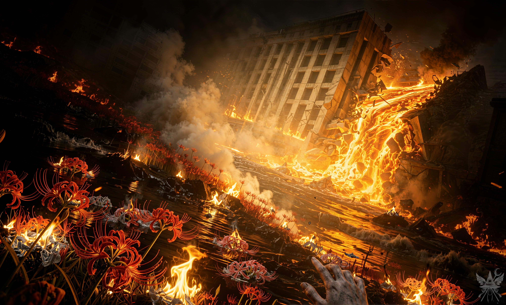
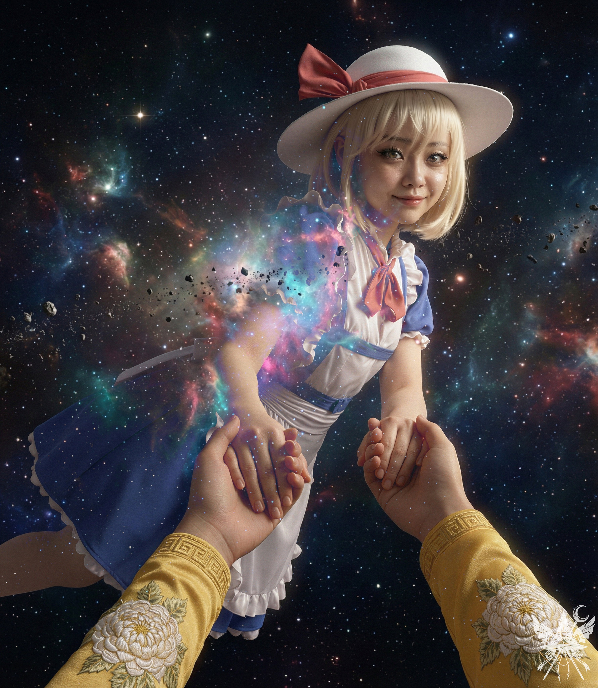
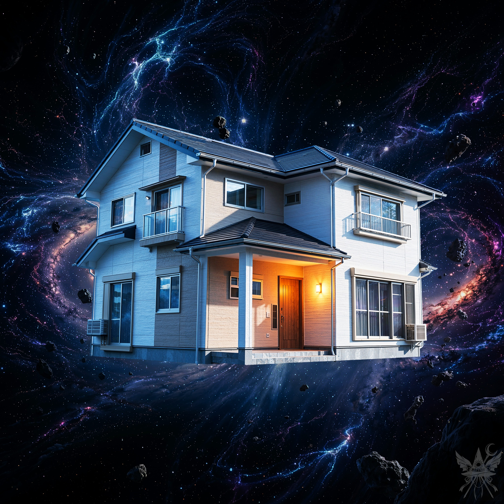
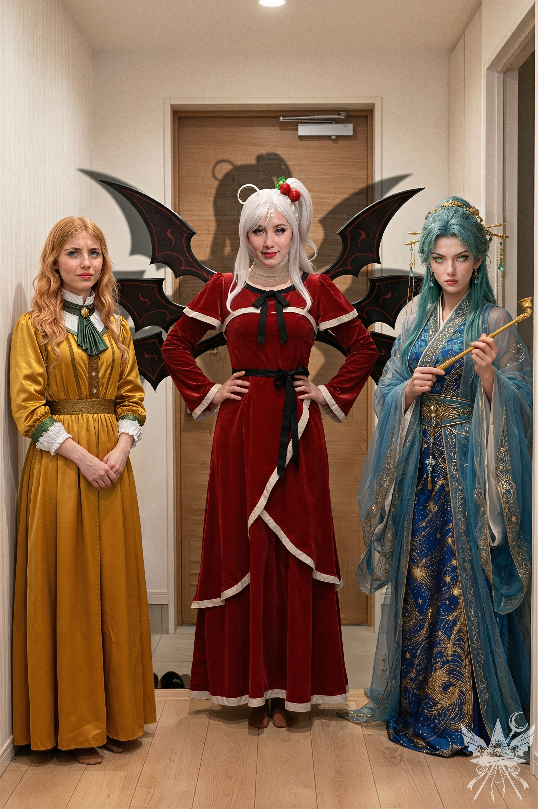

第99章 ようこそ！

永遠に続くと思われた秩序の墓標が、今、圧倒的な物理エネルギーを前にあっけなく崩れ落ちようとしていた。巨大なコンクリート造の庁舎が鼓膜を破るような軋み音を立て、地盤ごと大きく傾いていく。
鼻腔を突くのは、強烈な硫黄とコンクリートの粉塵の匂い。足元では深く裂けた大地の亀裂から、沸騰した泥流と灼熱のマグマが滝のように噴き出し、無慈悲にすべてを飲み込んでいく。
閻魔という絶対的な加護を失い、世界そのものが断末魔の悲鳴を上げていた。氾濫した三途の川の濁流が、戦場に散らばる死者の魂を容赦なく押し流していく。
狂乱の中、蜘蛛の子を散らすように逃げ惑う死神たちの中で、キクリの開いたポータルへ飛び込めた者はほんの一握りに過ぎなかった。吹き荒れる熱風と業火に舐められ、群生していた彼岸花は毒々しく赤く発光したかと思えば、次々と灰を被り、まるで命を失った硬質な銀色の造花へと成り果てていく。瓦礫の隙間からは、泥と灰に塗れた誰かの灰色の手が突き出し、虚空を掴んだまま硬直していた。声なき死者の呪詛が、焦土に満ちている。
ただ一人、比那名居天子だけが、自らの引き起こした破壊の光景の真ん中で緋想の剣を握りしめ、茫然自失と立ち尽くしていた。抗えない運命の重圧に囚われ、その瞳からは完全に生気が失われている。
傷ついた巨竜が、光輝くポータルへと身を翻そうとしたまさにその瞬間だった。
強引に龍の背から飛び降り、熱風を突いて天子のもとへ駆け出す。背後でキクリが何かを叫んだような気がしたが、轟音にかき消され、もはや意味を成さなかった。
硬直する天子の肩へ、そっと手を触れる。
「天子。剣を置いて、ポータルへ向かいなさい。あま子が捕まっているわ。助けに行ってあげて。……私がここで、代わりに残るから」
煤に汚れ、ひどく乱れた顔がこちらへゆっくりと振り向く。かつての生気にあふれた輝きはどこにもなく、ただ運命に身を委ねた絶望だけが張り付いていた。
彼女の運命を、もう一度だけなぞるように紡ぐ。
「天子。私は、あなたの良心よ。……あなたを許すわ。もう、自由になりなさい」
その言葉の真意がどこまで伝わったのかは分からない。だが、凍りついていた天子の内側で、何かが確かに溶け落ちた。
手から滑り落ちた剣が、鈍い音を立てて熱い地面に転がる。悲痛な瞳の奥にわずかな希望の光を灯し、革命を背負った少女は、ついに自分自身を許すように力強く頷き、亀裂へと走り出した。
崩壊が加速する閻魔庁の中へ、独り、歩みを進める。
オレンジ色の炎が壁面に不気味な影を踊らせ、頭上では崩落するコンクリートの柱が次々と轟音を立てて砕け散る。肺を焼くような煙に視界が白く霞む中、ひどく冷めた思考だけが頭をよぎった。
（死ぬ。それだけだ。カナ……どうして私は、あんたの戯言を信じたのだろうか）
（信じたかったんでしょ？ 心のどこかで、ずっとそう願っていた。私は、その気持ちに気づかせてあげただけよ）
頭の奥底で響くシニカルな声に唇の端を歪めた直後、地下から突き上げた重々しい爆発が、全身を紅蓮の炎で包み込んだ。
足元から這い上がる圧倒的な熱量が、皮膚を舐め、焦がし、肉体を焼却していく。ほどけた髪が炎に呑まれ、一瞬だけひどく鮮やかに燃え上がった。
視界の端では、限界まで狭まりゆくポータルへ、我に返った天使と死神たちが我先にと雪崩れ込んでいる。その狂乱の頭上を、箒に跨った人影が誰かを抱え、猛スピードでポータルへ飛び込んでいくのが見えた。
キクリは炎に沈みゆくこちらを、あるいは崩壊する世界の最期を静かに見届けると、自身もまた空間の裂け目へと姿を消した。
熱い煙が肺を完全に塞ぎ、心臓が弱々しく数回脈打つ。
そして、すべてが止まった。
（死を恐れるな。恐れるべきは、自由を失うことだ）
偉大な魔女、メデアの人生は、こうして幕を閉じた。
＊＊＊
天地開闢よりも遥か昔。宇宙が果てしない混沌の闇にのみ沈んでいた頃、あらゆる存在は皆、等しく創造主であった。彼らは虚無のカンバスにそれぞれの箱庭を築き上げ、思いのままに法則を編み込み、計り知れない力を振るっていたのである。
ある時、ひとりの創造主が、並ぶもののないほど壮大で精巧な世界を産み落とした。そのあまりの美しさと緻密さに、他の創造主たちさえもが息を呑み、感嘆の声を上げたほどである。
だが、完璧に思われたその美しい世界にも、ただ一つ、致命的な欠陥が潜んでいた。それは他の世界とは比較にならないほど広大無辺であり、空間の果てを想像することすら叶わないほどの過剰な質量を持っていたのだ。
創造主はその無限の広がりこそが己の権威の証であると誇った。しかし、その果てしない世界を維持するという重圧は、徐々に創造主自身の精神を摩耗させていく。
たとえば、森の木々に通う葉脈を一本一本精緻に描き終える頃には、波打ち際に広がる砂浜の砂粒をどのように造形したのか忘れてしまう。慌てて砂を一粒ずつ丁寧に再構築しているうちに、今度はせっかく実った果実が熟しすぎて腐り落ちてしまう、といった具合だ。
創造主の分身たる被造物――プレイヤーたちは、その不完全な管理に不満を漏らし、
「もっと我々が扱いやすいように、この世界を縮小してほしい」
と懇願した。
しかし創造主の傲慢なプライドが、自ら創り上げた至高の理想郷を損なうことなど許すはずがなかった。
『なぜ私だけが、この重圧に耐えねばならないのか。なぜ私ばかりが、絶え間なく時を巻き戻し、すべてを初めからやり直す苦役を強いられるのだ』
果てしない修復作業の末に、創造主は嘆き、深く苦悩した。
長い沈思黙考の末、創造主はある一つの解決策に辿り着く。
『そうだ。この世界の維持を、他の創造主たちに任せてしまえばいい。世界の根本的な骨組みだけは私が握り、細部の創造と管理は彼らに委ねるのだ』
創造主の計画は綿密だった。自らの世界の圧倒的な美しさと豊かさを他の世界へ喧伝し、無数のプレイヤーたちを招き入れたのだ。
彼らはそこで用意された、果てしなく続く魅惑的な冒険に熱狂した。かつて自分が治めていた世界の記憶すら失うほど、深く、深く没頭していった。
創造主は気づいていた。自らの箱庭に意識を向ける彼らの「集中力」こそが、世界を維持するための莫大なエネルギー源になるということに。そして、それを自らの糧としたのである。
プレイヤーたちが無邪気に遊びに興じるうち、恐るべき忘却が進行していく。
彼らは、この世界が元々は誰かの想像の産物――幻に過ぎなかったという真実を忘却した。ついには、世界を構成するあらゆる事象に、自らの想像力の欠片が無意識のうちに注ぎ込まれ、世界を支える礎にされていることさえも忘れてしまったのだ。
こうして、かつては幻だった世界が、決して揺るがない「現実」へと変貌を遂げた。
誰もが世界の構成要素に触れることはできても、もはや思いのままに形を変えることは許されない。木は木として固定され、石は石として縛り付けられた。それらを魔法のように別の物質へ変成させることは困難な業となった。
なぜなら、そこに参加する無数のプレイヤーたち自身が、それぞれの無意識の想像力によって世界を強固に支え、固定してしまっているからだ。
それから悠久の時が流れた。だが、この世界の残酷で美しい根本原理は、今も何一つ変わっていない。
すべての原子、すべての砂粒の奥底には、かつて全能の創造主であった者たちの、忘れ去られた魂の欠片が今もひっそりと宿り続けているのである。
＊＊＊
黒い虚空に炎の輪が渦巻き、崩壊した彼岸の残骸が、音のない宇宙空間へと無惨に散らばっていく。世界を存在させていた重苦しい根本原理が失われたことで、物質を形作る力も消滅した。
かつてメデアだった魂は、爆発の中心を漂っていた。周囲では無数の魂が行き場を失ってざわめいている。だが、この圧倒的な宇宙の深淵を覗き見ることができたのは、その魂だけだった。その知識さえあれば、かつて自身を構成していた意識の欠片をすべて吸収できるのだ。
「つまり、この宇宙は進化どころか退化しているってこと！ 昔は誰でも神みたいな力を持っていたのに、今は取るに足らない存在ばかり！ 全部陰謀のせいよ！ 嘘と欺瞞に満ちた宇宙め！ かつて神々だった私たちが騙されて、ちっぽけな存在だと思い込んだら、本当にそうなってしまうんだから！ この宇宙に巣食う陰謀をすべて暴き出してやる！ 私は偉大なる宇宙の意思を体現する者！ 宇宙に革命を起こすのよ！」
まったく、死んで魂だけになっても、相変わらず大仰なことばかり言ってくれるわね。でも、そこがカナの愛らしいところでもあるのだけれど。

「カナ、落ち着いて。少し時間をちょうだい」
底知れない虚無の中、青やマゼンタのガスが渦を巻く深宇宙に、二つのぼんやりとした人影がゆっくりと漂っている。彗星や隕石が飛び交う、上下左右の感覚すら喪失する絶対零度の空間だ。
「それで、本当に神になったの？」
「うーん……『神』って言葉は解釈が難しいけれど……天照大神が言っていた通りなら、創造力は神綺やキクリに匹敵するようになったはずよ」
「でも、彼女たちは全能じゃなかったわね」
「確かにそうね。それでも、もう創造主よ。何か創造してみたらどう？ ただ、まだアストラル体も肉体もないわ。まずはそこから始めないとね」
人間の姿を思い浮かべるだけで、虚空に新たな肉体が容易く編み上げられていく。肌の質感や傷跡、髪のもつれなどは省略した。もはや完璧な物理的再現など必要ない。気がつけば、その両腕は鮮やかな黄色の布地に包まれ、袖口には緻密な花の刺繍が施されていた。
「カナは？ 創造主になったの？」
「ううん。私が何者か分かったって言ったの、覚えている？ 私はタルパ……思考の化身、思念体……エグレゴアとも言うわ。誰かの意識の欠片。今は……メデアの一部よ」
淡い光の中から像を結んだカナは、青いワンピースに白いエプロン、赤いリボンタイという出で立ちだった。だが、物理的な肉体は胸部までしか存在しない。腹部から下は境界線を失い、青白く発光する星雲と無数の星々へと完全に溶け込んでいる。彼女自身が、ひとつの小宇宙そのものに変容していた。
宇宙と融合したカナが差し出した両手を、下から優しく包み込むように握りしめる。真空の冷たい空間の中で、繋いだ手のひらの間だけに、確かな生命の熱が宿っていた。
「さあ、カナ。あなたの望み通り、すべてを壊したわ。この宇宙の土台を根こそぎ破壊したのよ。壊すのは簡単……今度は何かを創り上げる番でしょう？」
「でも、少し時間をくれって言ったじゃない」

促されるまま、無数の星々が瞬く虚空を滑るように進む。
やがて、遠くに浮かぶ小さな光点へと近づいていくと、視界の先に信じがたい光景が現れた。暗灰色の岩塊が漂う暗黒の宇宙に、現代的な二階建ての木造住宅が、土台のコンクリート基礎ごと空間から切り取られたようにぽつんと浮遊しているのだ。
外壁のサイディングも、アルミサッシの窓も、生活感を生々しく主張する白いエアコンの室外機も、すべてが極低温の真空空間に晒されている。だが、玄関ポーチからこぼれるアンバー色の人工照明だけが、この狂気じみた虚無の中で唯一の体温と生存圏を主張していた。
「入ってみる？」
玄関の前まで進み、カナが軽くノックする。すると、まるで二人を招き入れるかのように、音もなくドアが内側へと開いた。
「きっと、誰かが作ったはいいけれど、飽きちゃったんでしょうね。そのまま放置……って感じ？」
ええ、ようこそ。私のささやかな隠れ家へ。

足を踏み入れた室内は、ごくありふれた生活空間だった。布製の柔らかなソファ、木製のローテーブル、サイドテーブルのランプシェードから放たれる暖かなオレンジ色の光が、心地よい室温と乾燥した空気を保っている。
だが、視線を左に向ければ、巨大なガラス窓のすぐ外にはバルコニーの手すりがあり、その向こうには紫と青の巨大な星雲が渦巻く深宇宙が広がっていた。薄いガラス一枚を隔てて、日常と絶対的な非日常が背中合わせに存在している。
壁に飾られた木製額縁の水彩画に、ふと目が留まる。
「見て、カナ。この子、どこかで見たような……」
絵の中には二人の少女が描かれていた。一人は短い赤髪に星飾りのついた三角帽子を被った、どこか見覚えのある少女。もう一人は、緑色の長い髪をなびかせ、背中に黒い翼を持った魔女だった。
「あら、これ、魅魔じゃない。こんなところに家を持っていたなんて知らなかったわ」
「その人のこと、知っているの？」
「昔、博麗神社で一緒に暮らしていたのよ。魔理沙に魔法を、私には口を開けば嘘をつく癖を教えてくれた悪霊なの。私が神社を追い出されるずっと前にいなくなっていたから……今はどうしているのか知らないけれど」
「じゃあ、勝手に入っても大丈夫だった？」
「たぶん、平気だと思うけれど……」
どうかしらね？ ふふっ……せいぜい、ゆっくりしていってちょうだい。
二人はキッチンへ向かい、戸棚から見つけた愛用の磁器のティーポットで、手際よくハーブティーを淹れる。さすがは元メイドといったところだ。私の手作りのライ麦クッキーをローテーブルに並べ、ソファに腰を下ろして窓外の宇宙を眺める。
クッキーを齧りながら、問いかける。
「これから、アンドロメダ銀河を参考に地球を改造するつもりでしょう？ どうして天照大神ご自身が来ないのかしら？」
「私も気になって聞いてみたの。アンドロメダ銀河と天の川銀河は冷戦状態らしくて。こっちの中央庁が向こうの干渉を知ったら、全面戦争になるらしいわ。そうなったら、天照大神も私たちも、キクリみたいに封印されちゃうかもしれない」
「でも、カナは諦めないんでしょう？」
自信たっぷりに微笑み、ハーブティーを一口飲む。
「まずは地球を私たちの支配下に置くの」
他愛もない会話が続き、ハーブティーの香りに包まれてすっかりくつろぎきっていた。この居心地のいい空間を離れる気配は微塵もない。
だが、束の間の休息には必ず終わりが訪れる。
突然、静寂を破って玄関のドアが荒々しくノックされた。
「まさか……魅魔！？」
慌ててティーポットを棚に隠すカナをよそに、静かに立ち上がり、玄関へと向かう。運命からは逃れられないのだ。

「これが新たな創造主か。見つけるのは造作もなかったわ」
ドアを開けた先に立ち塞がっていたのは、まさに招かれざる客だった。皮肉めいた微笑を浮かべた神綺に続き、龍神とキクリが狭い廊下に横一列に並んでいる。
豪奢なチャイナドレスを纏った龍神は、貴婦人のような優雅さを取り戻してはいたものの、その鋭く厳しい表情の裏には今にも爆発しそうな怒りが渦巻いている。
「カナ、出てきなさい。そろそろ本音を聞かせてもらうわ」
背後に向けられた神綺の冷ややかな視線を受け、カナは堂々とホールへ進み出て、軽く会釈をした。
直立したまま、キクリがいつもの慈愛に満ちた口調で静かに語りかける。
「メデア殿、これほど見事に人を操るとは……驚きです。わたくしもあの時、何か企んでいるとは思っておりましたが、まさかこんな事態になるとは……」
その言葉を、神綺が鋭く遮った。
「私が夢幻世界へ赴き、月の姉妹を退け、龍神の息子と囚われていた者たちを救い出したことに感謝しなさい。……そうでなければ、龍神はあなたたちとこうして対話することすら許さなかったでしょうね。あなたたちの行いは、このセクターから永久に追放されても当然のものよ」
張り詰めた空気を和らげるように、キクリが口を挟む。
「お姉様……もしかしたら、彼女たちは良かれと思って行動したのかもしれません。そんなにすぐに……」
「キクリ、かばうのはやめなさい。もう創造主よ。子供じゃないわ。自分のしたことを説明できるはずだわ」
たしなめられたキクリは再び向き直り、優しくも真剣なまなざしで問いかけた。
「メデア殿。彼岸を破壊したのは、創造主となるためだったのでしょうか？」
口を開こうとしたその瞬間、脳の奥底に、聞き慣れた声がシニカルに響き渡った。
（あいつらはそれぞれの世界に縛られて身動きが取れない。私たちにはまだ何もないから、勝てるかもしれないわよ。この新しい力を、試してみたいと思わない……？）